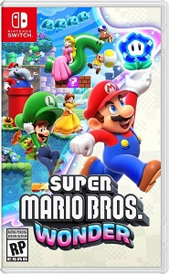

La musique provenait bien du jeu vidéo Supermario Wonder
Super Mario Wonder est un jeu vidéo de plates-formes sorti en 2023
C'est une amélioration du jeu "Super Mario Bros
À travers les niveaux, le joueur peut récupérer des Fleurs Prodiges qui peuvent modifier le niveau ou transformer Mario.
Un nouvel objet permet également de transformer Mario en éléphant